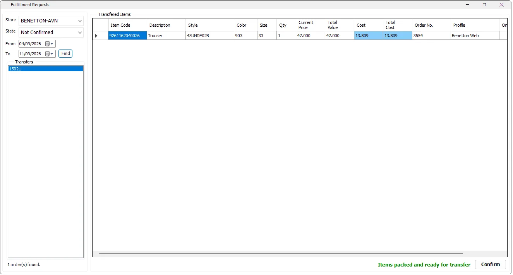

Fulfillment Requests
Fulfillment Requests is the Store-side packing/confirmation screen for Stock Transfer vouchers created by the online-order fulfillment workflow. It lets the supplying Store verify what must be sent to the mapped online Store and confirm that the request is ready.

Find fulfillment transfers
| Control | Purpose |
|---|---|
| Store | The physical supplying Store. The list follows the Stores available to the current IMS user. |
| State | All, Not Confirmed or Confirmed. |
| From / To | Date range for fulfillment transfers. The screen starts with approximately the last seven days. |
| Find | Reloads the transfer vouchers for the selected filters. |
| Transfers | Lists the Stock Transfer voucher numbers matching the current filters. |
Transferred Items
Selecting a transfer loads the item detail that must be sent from the current Store to the online Store.
| Column | Meaning |
|---|---|
| Item Code / Description | IMS merchandise identity. |
| Style / Color / Size | Fashion variant details for packing verification. |
| Qty | Quantity requested from this Store. |
| Current Price / Total Value | Current retail value of the item/quantity. |
| Cost / Total Cost | Cost valuation. These columns are hidden when the active user is not allowed to view COGS. |
| Order No. | The online order connected to the fulfillment line. |
| Profile / Online Store | The Shopify profile/access Store that requested the stock. |
Confirm the request
- Select the supplying Store and keep State = Not Confirmed to see outstanding work.
- Select a transfer voucher from the left list.
- Use the merchandise grid to verify Item Code, style/color/size and quantity while packing.
- When the items are packed and ready, click Confirm.
- IMS marks the fulfillment transfer as confirmed. It then appears under the Confirmed state rather than the outstanding list.
Created by the background integration
For API-connected orders, the Shopify Integration Server creates these Stock Transfer vouchers while importing and fulfilling the order. The server links the online Order No., Profile and Shopify Store to the transfer so the supplying Store can identify exactly what the request belongs to.
Where these transfers come from
Incoming Orders uses the Profile fulfillment rules to source IMS inventory. It checks prioritized Main Fulfillment Stores first, then other eligible Stores when necessary. IMS creates Stock Transfer vouchers from the selected physical Store(s) to the mapped online Store and links each transfer line to the online Order No.
That is why one online order can result in more than one fulfillment transfer when its items must be supplied by different Stores.